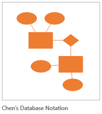
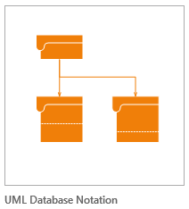

1. Verkkokaupan tietokanta
Tehtävänäsi on suunnitella verkkokauppaa varten relaatiotietokanta, joka toteutetaan MySQL:llä. Työ on tarkoitus saada valmiiksi perjantain 17.8 tunneilla.
Tehtävästä syntyy pikkuhiljaa Wordilla tehty tietokantadokumentti (siis vain 1 tiedosto), jossa ovat seuraavien vaiheiden mukaiset kuvaukset. Tämä on yksi kurssin pakollisista tehtävistä.
Vaiheet
ER-kaavio ja tietokantakaavio
- Mieti ensin, mitä tietoja verkkokaupassa tarvitaan (pelkät tuotteet eivät riitä). Tee ER-kaavio suunnittelemasi tietokannan käsitteistöstä.

- Tee tietokannan rakenteen kuvaus (Visio: Software / UML Database Notation). Huom.! Tähän kuuluvat myös kenttäkohtaiset määritykset.

- Esittele suunnitelmasi opelle ja korjaa tarvittaessa.
MySQL-toteutus
- Luo taulukot MySQL-tietokantaan. Tee luontilausekkeet (SHOW CREATE TABLE taulukon_nimi). Huom.! Taulukot kannattaa nimetä niin, että jokaisen edessä on jokin sama tunniste, joka kertoo, että ne kuuluvat juuri tähän tietokantaan. (esimerkiksi "h1_asiakkaat")
- Luo yhteydet ja viite-eheydet. (Katso erillinen ohjeistus.) Tulosta tietokannastasi luontilauseet vasta viite-eheyden lisäämisen jälkeen.
- Syötä jonkin verran dataa tietokantaan.
Testitapaukset
- Laaditaan yksinkertainen testauslomake ja siihen kyselyitä joilla kokeillaan tietokannan käyttämistä. Pyri miettimään tyypillisiä käyttötapoja tietokannallesi. Tarkoitus on, että mukana on vähintään yksi SELECT, DELETE yms. -kysely. Kaikissa tauluissa ei tarvitse olla kaikkia tyyppejä mutta kaikkia tauluja tulisi testata jotenkin.
| Testattava asia | SQL-lause | Mitä pitäisi tapahtua | Mitä tapahtui | Milloin testattu | Milloin korjattu |
|---|
| | | | | |
| | | | | |
| | | | | |
| | | | | |
- a. Insert
- b. Delete Huom.! Viite-eheyden testaus
- c. Update
- d. Select
- e. Select useampaan taulukkoon
Millaisia kyselyt olisivat?
- Testaa tietokantasi ja täytä samalla tapausluetteloa.
MS Word-asiakirja
- Liitä palautustiedostoon tieto siitä, miten pääsen testaamaan tietokantaasi (tietokannan nimi, tunnus, yms.)
Koko työ palautetaan sähköpostilla (vain yksi liite) (eerikki.maula(a)tampere.fi).
Lisäselvitystä verkkokaupasta
Mieti tarkkaan, mitkä seuraavista toiminnoista vaikuttavat ja liittyvät tietokantaan
Asiakas
- voi lukea tiedotteita
- voi selailla kaupan tuotteita ja tuoteryhmiä
- voi rekisteröityä
- voi tilata ja valita maksutavan
- voi seurata ostoskoriaan
- voi seurata teknisiä vaiheita ostoprosessissa (teknisillä vaiheilla tarkoitetaan rekisteröitymistä, tuotteiden keräämistä ostoskoriin ja tilauksen hyväksymistä)
- saa vahvistuksen kaupasta yhteystietoineen ja peruuttamis- ja palauttamisohjeineen
- voi peruuttaa missä vaiheessa tahansa tilauksen
- voi antaa palautetta palautelomakkeella
Lisäksi asiakas
- voi lukea kuluttajansuojalain mukaiset yrityksen yhteystiedot (kuvitellussa yrityksessäkin on oltava merkittynä paikka, jossa rekisteritunnukset ovat)
- voi varmistaa, että henkilötietojen käsittely on tietosuojavaltuutetun ohjeiden mukaista – esimerkki lain vaatimat rekisteriselosteet
- voi lukea sopimusehdot ennen tilauksen hyväksymistä
- voi lukea kaupan peruuttamisohjeet
Kaupan ylläpitäjä
- voi lisätä, päivittää ja poistaa tuoteryhmiä ja tuotteita tuotetietoineen ja kuvineen (muista myös linkit valmistajan kotisivustolle)
- päivittää tiedotteita sivustolla
- hallinnoida (seurata, päivittää ja poistaa) tilauksia
- hallinnoida (seurata, päivittää ja poistaa) rekisteröityneitä asiakkaita
- lukea seurantaraportteja (esim. toteutuneista kaupoista jne.)
- lukea ja antaa vastauksia asiakaspalautteisiin